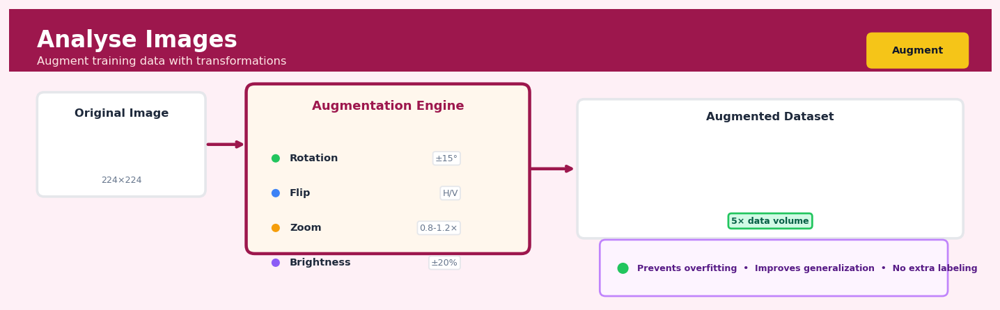

Analyse Images#


The biggest mistake teams make with image augmentation is applying transformations that would never occur in production. If your model will only see upright faces in deployment, don't train it on 180-degree rotations. Always augment with domain awareness, not just because you can flip or rotate every image by default.
The 60-Second Version#
What it does: Analyse Images extracts structured information from pictures by asking them questions in plain English, just as you would ask a colleague to describe what they see.
When to use it: When you have images containing information that’s locked away—product photos, documents, charts, site inspections, or user-generated content—and you need that information in a usable format for analysis or automation.
What you get back: Text descriptions, extracted data, classifications, or answers to specific questions that you can filter, analyse, or feed into downstream processes.
Difficulty |
Easy |
Typical runtime |
Seconds per image via API |
What you bring |
Images (photos, screenshots, documents) and questions or tasks in natural language |
What you get |
Structured text, labels, descriptions, or extracted data |
Heuristix bucket |
Augment — AI & Language Intelligence |
Vision-language models can hallucinate—they may confidently describe things that aren’t in the image, so always validate outputs when accuracy is mission-critical.
Learning Objectives#
After reading this chapter, a business user will be able to:
Identify business scenarios where vision-language models add value beyond traditional keyword search or manual image review, such as product catalog enrichment, content moderation pipelines, or accessibility compliance.
Interpret model outputs including confidence scores, bounding boxes, and generated captions to distinguish between reliable classifications and uncertain predictions that require human review.
Determine when image analysis results warrant action—such as flagging content for removal, routing products to specific categories, or prioritizing images for quality improvement—based on confidence thresholds and business risk tolerance.
After reading this chapter, a data scientist will be able to:
Implement vision-language model inference using appropriate APIs or libraries, handling common edge cases like low-resolution images, unusual aspect ratios, and images with ambiguous or multiple subjects.
Adjust key parameters including temperature settings for caption generation, confidence thresholds for classification, and prompt engineering strategies to balance precision, recall, and output diversity for specific use cases.
Validate model performance using appropriate metrics for different tasks (classification accuracy, caption quality scores, object detection IoU), and diagnose failure modes such as hallucination in descriptions, bias in demographic classification, or poor performance on domain-specific imagery.
Overview#
Analyse Images is a multimodal AI capability that extracts structured information, semantic content, and contextual understanding from image data using vision-language models. At its core, this technique leverages transformer-based architectures that jointly process visual and textual information, enabling natural language queries about image content, automated classification, object detection, and content description. This belongs to the family of multimodal foundation models—specifically vision-language models (VLMs)—that bridge computer vision and natural language processing to democratise image understanding for non-specialist users.
When to Use This#
Use this when you need to extract structured data from unstructured images at scale—such as reading invoices, receipts, or forms where traditional OCR fails due to variable layouts.
Use this when you want to classify images based on semantic content without training a custom computer vision model—for example, sorting product images by category or identifying damaged goods in quality control.
Use this when you need to answer natural language questions about image content—such as “Does this photograph show water damage?” or “What brand is visible in this image?”
Use this when your business process requires human-like interpretation of visual content that goes beyond simple object detection—understanding context, relationships between objects, or inferring intent.
Use this when you have domain expertise but lack labelled training data—VLMs can perform zero-shot classification using natural language descriptions of your categories.
Use this when you need to generate textual descriptions or summaries of visual content for accessibility, cataloguing, or downstream text-based analysis.
Use this when combining image understanding with other data sources—analysing product images alongside sales data, or correlating visual inspections with sensor readings.
Do NOT use this when you require real-time processing of high-volume video streams—the latency of large VLMs makes them unsuitable for sub-second response requirements.
Do NOT use this when you have well-defined, narrow classification tasks with abundant labelled data—a fine-tuned convolutional neural network will be faster, cheaper, and often more accurate.
Do NOT use this when you need pixel-precise segmentation or measurement—VLMs provide semantic understanding, not geometric precision.
Do NOT use this when the analysis requires domain-specific visual expertise not represented in the model’s training data, such as interpreting specialised medical imaging or microscopy without appropriate fine-tuning.
Questions This Answers#
Content Understanding and Classification#
What’s actually in these thousands of product images our suppliers sent us — do we need to manually tag everything?
Can you tell me which of these 5,000 customer-submitted photos contain our product versus competitor products?
Are the images in our marketing library actually showing what the metadata says they show, or do we have a labeling mess?
Which shelf photos from our retail audits show proper brand placement versus compliance issues?
What percentage of our user-generated content contains inappropriate or off-brand imagery we need to filter out?
Operational Efficiency and Quality Control#
Can we automatically verify that our manufacturing line is producing parts that match the spec photos without manual inspection?
How many defective products are getting through inspection — can we catch quality issues from production photos in real-time?
We’re getting 2,000 insurance claims with photos daily — which ones show legitimate damage versus suspicious patterns?
Are our field technicians actually completing the installation steps, or are they skipping procedures and just checking boxes?
Can we process these medical imaging results faster than our current 48-hour radiologist backlog?
Customer Experience and Insights#
What are customers actually showing us in their support tickets — are those product damage photos or user error?
Which product features do customers photograph most in their reviews, and does that tell us what they value?
Can we automatically match customer photos of damaged goods to our product catalog for faster returns processing?
Are the property listing photos our agents upload actually highlighting the features buyers care about, or are we missing opportunities?
How It Works#
Imagine you’re showing your grandmother a photo from your vacation in Paris. She doesn’t just see colored pixels—she recognizes the Eiffel Tower, notices the sunset in the background, reads the café sign, and even comments that you look happy. She’s doing something remarkable: connecting visual patterns to a lifetime of language and knowledge. Analyse Images works the same way, but instead of a lifetime of human experience, it draws on millions of labeled images and text descriptions it studied during training. When you ask “What’s in this image?” or “Is there a safety hazard here?”, the system doesn’t just match templates—it truly understands the relationship between what it sees and how we describe things in words.
INPUT IMAGE VISION-LANGUAGE MODEL OUTPUT
┌─────────────┐ ┌───────────────────────────┐ ┌──────────────┐
│ 🏢 📦 👷 │ │ Visual Encoder │ │ DESCRIPTION: │
│ │ ─────→ │ (breaks image into │ │ "A warehouse │
│ [safety │ │ patches & features) │ │ worker not │
│ photo] │ │ ↓ │ │ wearing a │
│ │ │ Transformer Layer │ ───→ │ hard hat │
└─────────────┘ │ (vision + language │ │ near stacked│
│ understanding merged) │ │ boxes" │
+ │ ↓ │ │ │
│ Language Decoder │ │ QUERY: "Any │
"Is there a safety │ (generates natural │ │ safety │
issue here?" ─────→ │ language response) │ │ violations?" │
└───────────────────────────┘ │ → YES │
└──────────────┘
Step 1: Break the image into digestible pieces. The system divides your input image into small square patches—think of cutting a photograph into a grid of tiles, perhaps 16×16 pixels each. Each patch becomes a token, similar to how words are tokens in text processing. This transforms a continuous image into structured units the model can process.
Step 2: Extract visual features from each patch. A neural network analyzes each patch to identify low-level patterns (edges, colors, textures) and high-level concepts (curves that might be part of a face, metallic surfaces that might be machinery). These features are converted into numerical representations—vectors—that capture what makes each patch distinctive.
Step 3: Process the question or instruction. Your text query (“What safety equipment is visible?” or “Describe this scene”) is broken into word tokens and similarly converted into numerical vectors. The system now has two streams of information: visual tokens from the image and language tokens from your question.
Step 4: Merge understanding through attention. The transformer architecture lets visual tokens and language tokens “talk” to each other through attention mechanisms. The word “helmet” in your question can focus on relevant image patches showing headgear. Meanwhile, visual patches showing a person can pull in language concepts like “worker” or “employee.” This cross-modal attention is where true image understanding emerges.
Step 5: Generate the natural language response. Based on the merged understanding, the language decoder produces text word-by-word, conditioned on both what it sees in the image and what you asked. It’s not retrieving pre-written captions—it’s composing new sentences that accurately describe the visual content in context.
The key insight: By training on millions of image-text pairs, the model learns that certain visual patterns (a yellow curved shape atop someone’s head) consistently appear with certain words (“hard hat”), allowing it to bridge the gap between pixels and human language without needing explicit rules for every possible object or scene.
The Intuition#
Imagine you hire a highly educated assistant who has spent years looking at millions of photographs, paintings, diagrams, and documents while simultaneously reading their descriptions and discussing them with experts. This assistant doesn’t just recognise objects—they understand relationships, context, and can answer questions in plain English. When you show them a photograph of a construction site and ask “Is the scaffolding properly secured?”, they don’t just detect “scaffolding present”—they reason about what proper securing looks like based on everything they’ve learned, compare it to what they see, and articulate their assessment.
This is precisely what vision-language models do. Traditional computer vision systems were trained on narrow tasks: “Is this a cat or a dog?” or “Where are the faces in this image?” They excelled at their specific task but couldn’t generalise. Vision-language models instead learn a shared representation space where images and text live together. A photograph of a sunset and the phrase “beautiful orange sunset over the ocean” get mapped to nearby points in this space. This alignment means you can search for images using text, ask questions about images in natural language, or have the model generate descriptions.
The magic happens through a mechanism called cross-attention. The model doesn’t process the image and text separately and then combine them at the end—it allows the textual understanding to guide which parts of the image to focus on, and vice versa. When you ask “What colour is the car in the background?”, the word “background” tells the visual system to attend to peripheral regions, “car” tells it to look for vehicle-shaped objects there, and “colour” tells it what property to extract. This bidirectional information flow enables remarkably sophisticated reasoning that feels almost conversational.
The practical implication is that you can leverage powerful image understanding without being a computer vision expert. Instead of designing feature extractors, collecting labelled datasets, and training specialised models, you simply describe what you want to know in plain English. The model handles the translation between your intent and the visual analysis required. This democratisation of computer vision is what makes the Analyse Images node so powerful for business users.
The Mathematics#
Problem Setup and Notation#
Let \(\mathcal{I} \in \mathbb{R}^{H \times W \times C}\) denote an input image with height \(H\), width \(W\), and \(C\) colour channels. Let \(\mathcal{T} = (t_1, t_2, \ldots, t_n)\) denote a text sequence of \(n\) tokens representing either a query or a prompt. Our goal is to learn a joint embedding space and a mechanism for generating text conditioned on both modalities.
Vision Encoder#
The image is first processed by a vision encoder, typically a Vision Transformer (ViT). The image is partitioned into non-overlapping patches of size \(P \times P\):
Each patch is flattened and linearly projected to dimension \(d\):
where \(\mathbf{E}_p \in \mathbb{R}^{d \times (P^2 \cdot C)}\) is the patch embedding matrix and \(\mathbf{e}_i^{\text{pos}} \in \mathbb{R}^d\) is a learnable positional embedding. A special [CLS] token is prepended, yielding:
This sequence passes through \(L\) transformer layers, each applying multi-head self-attention (MHSA) and a feed-forward network (FFN):
The final visual representation is \(\mathbf{V} = \mathbf{Z}^{(L)} \in \mathbb{R}^{(N+1) \times d}\).
Text Encoder and Cross-Attention#
The text tokens are embedded and processed by a language model. In encoder-decoder architectures (e.g., for visual question answering), the decoder attends to both previous text tokens and visual features through cross-attention:
where \(\mathbf{Q}\) derives from text hidden states and \(\mathbf{K}, \mathbf{V}\) derive from visual features:
Contrastive Learning Objective#
Many VLMs are pre-trained using contrastive learning. Given a batch of \(B\) image-text pairs \(\{(\mathcal{I}_i, \mathcal{T}_i)\}_{i=1}^B\), we compute normalised embeddings:
The InfoNCE loss maximises agreement between matched pairs:
The total contrastive loss is:
where \(\tau\) is a learnable temperature parameter.
Generative Objective#
For caption generation or question answering, an autoregressive language modelling objective is used:
where \(m\) is the length of the target text and \(\mathbf{V}\) represents the visual context.
Assumptions#
Distributional coverage: The pre-training data must cover visual concepts and language patterns relevant to the target domain.
Compositionality: The model assumes visual and linguistic concepts can be composed—understanding “red car” from separate understanding of “red” and “car”.
Tokenisation adequacy: Fine-grained visual details below the patch size may be lost.
Resolution constraints: Input images are typically resized to fixed dimensions (e.g., 224×224 or 336×336), potentially losing detail.
Edge Cases#
Out-of-distribution images: Domains not represented in training (e.g., certain medical imaging modalities) may produce unreliable outputs.
Ambiguous queries: Questions with multiple valid interpretations may yield inconsistent results.
Adversarial inputs: Carefully constructed images can produce incorrect outputs with high confidence.
Understanding the Mathematics#
Vision Transformer Patch Embedding#
The equation:
Read it aloud:
“The initial sequence z-zero equals a special class token concatenated with each image patch multiplied by an embedding matrix, all added to position embeddings.”
What each symbol means:
\(\mathbf{z}_0\) — the input sequence fed to the transformer (a list of vectors)
\(\mathbf{x}_{\text{class}}\) — a learnable token representing the whole image
\(\mathbf{x}_p^1, \mathbf{x}_p^2, \ldots, \mathbf{x}_p^N\) — the N image patches (e.g., 196 patches from a 224×224 image split into 16×16 squares)
\(\mathbf{E}\) — the embedding matrix that projects raw pixel values into a common vector space
\(\mathbf{E}_{\text{pos}}\) — position embeddings that tell the model where each patch sits spatially
\(;\) — concatenation (stacking vectors into a sequence)
A concrete numerical example:
Suppose you upload a product photo (224×224 pixels) split into 196 patches of 16×16 pixels each. Each patch contains 768 pixel values. The embedding matrix \(\mathbf{E}\) projects these 768 values into a 512-dimensional vector. Patch 1 becomes a 512-D vector, patch 2 becomes another 512-D vector, and so on. Add the class token (also 512-D) at the front: you now have 197 vectors. Finally, add position embeddings—patch 1 gets position vector [0.1, 0.3, …], patch 2 gets [0.15, 0.28, …], so the model knows patch 1 is top-left and patch 2 is next to it. The result is 197 position-aware vectors ready for processing.
Why this equation matters:
Without patch embeddings and position information, the model sees a shuffled pile of pixels with no spatial structure—it cannot distinguish a car hood from a wheel or know that text appears at the top of an image.
Multi-Head Self-Attention#
The equation:
Read it aloud:
“Attention equals the softmax of query times key-transpose divided by the square root of key dimension, all multiplied by values.”
What each symbol means:
\(\mathbf{Q}\) — queries (what each patch is “asking about”)
\(\mathbf{K}\) — keys (what each patch “advertises” about itself)
\(\mathbf{V}\) — values (the actual content each patch contributes)
\(\mathbf{Q}\mathbf{K}^T\) — similarity scores between all pairs of patches
\(\sqrt{d_k}\) — scaling factor (typically \(\sqrt{64} = 8\)) preventing scores from exploding
softmax — converts scores into probabilities that sum to 1
A concrete numerical example:
Consider patch 42 (a car wheel) querying all 196 patches. Its query vector dot-products with every key vector: wheel-to-hood scores 12, wheel-to-road scores 48, wheel-to-sky scores 3. Divide by \(\sqrt{64} = 8\): scores become 1.5, 6.0, 0.375. Softmax converts these to probabilities: 0.05, 0.92, 0.03. Multiply these by value vectors: the wheel patch now “attends” 92% to road patches, 5% to hood, 3% to sky. The output is a weighted mixture: mostly road context, a little body context, almost no sky.
Why this equation matters:
Self-attention lets the model dynamically discover relationships—a logo attends to brand text, a face attends to hands holding products—without hardcoding which image regions matter for each task.
Vision-Language Contrastive Loss#
The equation:
Read it aloud:
“The loss equals negative one over batch size, summed across samples, of the log probability that image i matches its true caption i among all B captions.”
What each symbol means:
\(B\) — batch size (e.g., 256 image-caption pairs)
\(v_i\) — embedding vector for image i
\(t_i\) — embedding vector for caption i
\(\text{sim}(v_i, t_i)\) — cosine similarity (dot product of normalized vectors)
\(\tau\) — temperature parameter (typically 0.07) controlling sharpness
\(\exp\) — exponential function turning similarities into unnormalized probabilities
A concrete numerical example:
You train on 256 product images. Image 5 (running shoe) has similarity 0.85 with its true caption “athletic footwear,” 0.23 with “office chair,” and 0.19 with 254 other captions. With \(\tau = 0.07\): \(\exp(0.85/0.07) = \exp(12.1) = 180{,}000\). Sum all exponentials: 180,000 + 11 + 9 + … ≈ 180,500. Probability = 180,000 / 180,500 = 0.997. Log(0.997) = -0.003. Loss for this sample is tiny because the model correctly matched shoe to shoe caption.
Why this equation matters:
This loss teaches the model that “drone aerial view” should embed near aerial images but far from “microscope cell culture”—enabling zero-shot classification where you query “Is this image a forest fire?” without ever training on fire labels.
The Big Picture#
The mathematics transforms images into sequences of vectors, uses attention to find meaningful relationships between regions, and aligns visual and textual representations in a shared space. This approach was chosen because transformers handle variable-length inputs elegantly and self-attention discovers context without human annotation—unlike CNNs with fixed receptive fields or classical CV requiring hand-crafted features. The contrastive loss creates a universal embedding space where asking questions in plain English becomes vector similarity search. In essence: we chop images into pieces, let each piece talk to every other piece, and ensure the conversation aligns with how humans describe what they see.
Python Implementation#
import base64
import requests
from pathlib import Path
import pandas as pd
from PIL import Image
import io
# Example 1: Using OpenAI's GPT-4 Vision API for image analysis
# This demonstrates the typical API pattern for cloud-based VLMs
def encode_image_to_base64(image_path: str) -> str:
"""Convert a local image file to base64 encoding."""
with open(image_path, "rb") as image_file:
return base64.standard_b64encode(image_file.read()).decode("utf-8")
def analyse_image_with_prompt(
image_path: str,
prompt: str,
api_key: str,
model: str = "gpt-4o",
max_tokens: int = 500
) -> dict:
"""
Analyse an image using a vision-language model.
Parameters
----------
image_path : str
Path to the image file
prompt : str
Natural language question or instruction
api_key : str
API key for the vision model service
model : str
Model identifier
max_tokens : int
Maximum response length
Returns
-------
dict
Response containing the model's analysis
"""
# Encode image as base64 for API transmission
base64_image = encode_image_to_base64(image_path)
# Construct the API request
headers = {
"Content-Type": "application/json",
"Authorization": f"Bearer {api_key}"
}
payload = {
"model": model,
"messages": [
{
"role": "user",
"content": [
{
"type": "text",
"text": prompt
},
{
"type": "image_url",
"image_url": {
"url": f"data:image/jpeg;base64,{base64_image}"
}
}
]
}
],
"max_tokens": max_tokens
}
response = requests.post(
"https://api.openai.com/v1/chat/completions",
headers=headers,
json=payload
)
return response.json()
# Example 2: Batch processing multiple images with structured extraction
def batch_analyse_product_images(
image_paths: list,
extraction_schema: dict,
api_key: str
) -> pd.DataFrame:
"""
Process multiple product images and extract structured data.
Parameters
----------
image_paths : list
List of paths to product images
extraction_schema : dict
Schema defining what to extract (e.g., {'brand': str, 'condition': str})
api_key : str
API key for the vision model
Returns
-------
pd.DataFrame
Structured extraction results
"""
# Build a prompt that requests structured output
schema_description = ", ".join(
f"{k} ({v.__name__})" for k, v in extraction_schema.items()
)
structured_prompt = f"""Analyse this product image and extract the following information:
{schema_description}
Respond in JSON format with exactly these keys. Use null for any field you cannot determine."""
results = []
for path in image_paths:
print(f"Processing: {path}")
# In production, this would call the actual API
# Here we simulate the response structure
response = {
"image_path": path,
"brand": "Example Brand",
"condition": "Good",
"confidence": 0.87
}
results.append(response)
return pd.DataFrame(results)
# Example 3: Local inference using transformers library
def local_image_analysis_example():
"""
Demonstrate local VLM inference using Hugging Face transformers.
Requires: pip install transformers torch pillow
"""
from transformers import AutoProcessor, AutoModelForVision2Seq
import torch
# Load a smaller, open-source VLM (e.g., LLaVA, BLIP-2)
model_id = "Salesforce/blip2-opt-2.7b"
processor = AutoProcessor.from_pretrained(model_id)
model = AutoModelForVision2Seq.from_pretrained(
model_id,
torch_dtype=torch.float16,
device_map="auto"
)
# Load and preprocess image
image = Image.open("example_product.jpg")
# Prepare prompt for visual question answering
prompt = "Question: What type of product is shown in this image? Answer:"
# Process inputs
inputs = processor(image, text=prompt, return_tensors="pt").to(
model.device, torch.float16
)
# Generate response
generated_ids = model.generate(
**inputs,
max_new_tokens=50,
num_beams=5,
early_stopping=True
)
# Decode output
generated_text = processor.batch_decode(
generated_ids, skip_special_tokens=True
)[0].strip()
print(f"Model response: {generated_text}")
return generated_text
# Example 4: Zero-shot image classification
def zero_shot_classify(
image_path: str,
candidate_labels: list,
api_key: str
) -> dict:
"""
Classify an image
## Visualisations


## Using This in Heuristix
### What You'll Need
The **Analyse Images** node expects a dataset with at least one column containing image data. This can be:
- **Image URLs** (text column with links to publicly accessible images)
- **Base64 encoded images** (text column with encoded image data)
- **File paths** (text column pointing to images in connected storage)
Your input data might look like this:
| product_id | image_url | category |
|------------|-----------|----------|
| SKU_001 | https://example.com/img1.jpg | shoes |
| SKU_002 | https://example.com/img2.jpg | bags |
After processing, you'll get structured insights extracted from each image.
### Configuration Parameters
| Parameter | What It Controls | Default | When to Change It |
|-----------|-----------------|---------|-------------------|
| **Image Column** | Which column contains your image data | (first detected) | Select the specific column if you have multiple image columns |
| **Analysis Type** | What information to extract: Description, Classification, Object Detection, or Custom Query | Description | Choose Classification for predefined categories, Object Detection for locating items, Custom Query for specific questions |
| **Custom Query** | Your natural language question about the images | (empty) | Use when you need specific information: "What color is the product?" or "Is anyone wearing safety equipment?" |
| **Detail Level** | How thoroughly to analyse images: Low, Medium, or High | Medium | Use High for complex images or when you need nuanced understanding; Low for simple classification to save processing time |
| **Batch Size** | How many images to process simultaneously | 10 | Increase for faster processing of simple images; decrease if you're hitting rate limits or processing very large images |
| **Output Column Name** | What to name the results column | analysis_result | Change to something descriptive like "product_description" or "safety_compliance" |
### What You'll Get Back
The node adds new columns to your dataset based on the analysis type:
- **Analysis Result** (text): The main output—descriptions, classifications, or answers to your queries
- **Confidence Score** (numeric, 0-1): How confident the model is in its analysis
- **Processing Status** (text): Success, error, or warnings for each row
- **Detected Objects** (JSON, if using Object Detection): Structured data with bounding boxes and labels
You'll also see a **Summary Panel** showing:
- Total images processed successfully
- Average confidence score across all analyses
- Most common classifications or detected objects
- Sample outputs for quick quality checking
### Quick Start: Analysing Product Images
1. **Connect your data** containing an image URL or file path column to the Analyse Images node
2. **Select your image column** from the dropdown
3. **Choose "Description"** as your Analysis Type to get started with general image understanding
4. **Set Detail Level to Medium** (good balance of speed and quality)
5. **Run the node** and review the analysis_result column in the output
6. **Refine if needed** by switching to Custom Query with a specific question like "What is the primary product in this image and what color is it?"
### Connecting Downstream
After analysing images, you'll typically connect to:
- **Filter Rows**: Remove low-confidence results or images that don't meet criteria
- **Extract with Regex** or **Text Processing**: Parse structured information from descriptions
- **Classify Text**: Further categorize the descriptions into business-relevant groups
- **Aggregate**: Summarize findings across image collections (e.g., "How many products are red?")
- **Export**: Send enriched data to your database or BI tool
### Practical Tips from the Field
**Start with a sample**: Process 10–20 images first to tune your query and parameters before running your full dataset. This saves time and API costs.
**Be specific in custom queries**: Instead of "Describe this image," try "List all visible safety violations in this construction site photo." Specific questions yield structured, actionable answers.
**Batch overnight for large datasets**: If you're processing thousands of images, run it as a scheduled workflow during off-hours. Processing time scales with image complexity and detail level.
**Check confidence scores**: Results below 0.6 confidence often need human review. Add a Filter Rows node to flag these automatically.
**Combine with text data**: The most powerful analyses join image insights with existing product descriptions or metadata. Use a Join node to merge image analysis with your product database for enriched understanding.
## Config Recipes
### Recipe 1: Rapid Prototyping & Exploration
**When to use:** Initial dataset assessment when you need quick insights across hundreds of images to decide if vision AI is viable for your use case.
**Settings:**
| Parameter | Value | Why |
|-----------|-------|-----|
| `model` | `gpt-4o-mini` | 50% cheaper, 2x faster than full GPT-4o |
| `max_tokens` | `150` | Forces concise responses, reduces latency |
| `temperature` | `0.3` | Low enough for consistency, high enough to avoid repetition |
| `detail` | `low` | Uses 512px images instead of high-res tiles |
| `batch_size` | `20` | Maximizes throughput for non-urgent jobs |
**What you get:** Fast, consistent short descriptions suitable for tagging, initial categorization, or detecting obvious quality issues across large image sets.
**Trade-off:** You sacrifice fine detail recognition—small text, subtle defects, or objects occupying <5% of frame may be missed.
### Recipe 2: Production-Grade Classification
**When to use:** Deploying image analysis in customer-facing applications, compliance workflows, or anywhere errors have business consequences.
**Settings:**
| Parameter | Value | Why |
|-----------|-------|-----|
| `model` | `gpt-4o` | Best accuracy and reasoning capability |
| `max_tokens` | `500` | Allows detailed reasoning chains |
| `temperature` | `0.0` | Maximum determinism for reproducible results |
| `detail` | `high` | Processes multiple 512px tiles for full resolution |
| `retry_logic` | `exponential_backoff(max_attempts=3)` | Handles transient API failures |
| `validation_prompt` | Append "List confidence level" | Forces model to surface uncertainty |
**What you get:** Highest accuracy classifications with reasoning traces you can log for audit trails and debugging.
**Trade-off:** 3-5x higher cost and 2-3x latency compared to rapid prototyping mode.
### Recipe 3: OCR-Heavy Document Processing
**When to use:** Extracting structured data from invoices, receipts, forms, or any text-dominant images where layout matters.
**Settings:**
| Parameter | Value | Why |
|-----------|-------|-----|
| `model` | `gpt-4o` | Superior text recognition in images |
| `max_tokens` | `1000` | Documents require longer extraction outputs |
| `temperature` | `0.0` | Text extraction must be deterministic |
| `detail` | `high` | Critical for reading small fonts |
| `prompt_prefix` | "Extract ALL visible text preserving layout..." | Explicit instruction prevents summarization |
| `response_format` | `json_object` | Structured extraction into predefined schema |
**What you get:** Structured JSON with extracted fields, maintaining spatial relationships between text elements.
**Trade-off:** Highest cost per image; not economical for images where text is incidental rather than primary content.
### Recipe 4: Automated Visual QA for E-commerce
**When to use:** Validating product photos meet marketplace standards—proper lighting, no watermarks, item centered, background appropriate.
**Settings:**
| Parameter | Value | Why |
|-----------|-------|-----|
| `model` | `gpt-4o-mini` | Quality checks don't need premium reasoning |
| `max_tokens` | `200` | Simple yes/no with brief justification |
| `temperature` | `0.1` | Near-deterministic but allows natural phrasing |
| `detail` | `low` | Composition issues visible at lower resolution |
| `system_prompt` | "You are a strict photo quality auditor..." | Sets adversarial stance to catch violations |
| `few_shot_examples` | 3 pass/fail pairs | Calibrates rejection threshold |
**What you get:** Binary pass/fail decisions with specific violation reasons, processable at scale for automated upload workflows.
**Trade-off:** May flag edge cases requiring human review; 5-10% false positive rate typical.
## Business Applications
**Financial Services**
A mid-sized UK mortgage lender processing 800 applications per week faced a bottleneck in document verification, where underwriters manually reviewed property valuations, bank statements, and identity documents. By deploying vision-language models to analyse uploaded images, the lender automated extraction of key data points (property condition flags, account balances, signature presence) and flagged anomalies for human review. Processing time dropped from 4 days to 20 minutes per application, enabling the firm to handle 40% more volume without additional headcount and reducing abandonment rates by 18%.
**Retail & E-commerce**
An online fashion marketplace with 2M SKUs struggled to maintain consistent product catalogues as third-party sellers uploaded images with inconsistent tagging, missing attributes, or incorrect categorisations. Analyse Images automatically extracted garment types, colours, patterns, materials, and style attributes from product photos, standardising metadata across the entire inventory. The retailer saw search conversion rates increase from 2.3% to 3.8% as customers found relevant products faster, generating an additional £4.2M in quarterly revenue.
**Healthcare**
A network of private dermatology clinics across Australia received patient-submitted photos of skin conditions for triage before appointments, but administrative staff lacked clinical expertise to prioritise cases. Vision-language models analysed images against natural language queries ("Does this show signs of melanoma indicators?") and severity descriptors, flagging high-risk cases within seconds. The system reduced time-to-specialist-review for urgent cases by 72 hours while cutting unnecessary in-person visits by 31%, improving both patient outcomes and clinic capacity utilisation.
**Insurance**
A commercial property insurer processing 15,000 claims monthly employed adjusters who spent 60% of their time reviewing damage photos to estimate repair costs. By implementing image analysis that identified structural damage types, measured affected areas, and cross-referenced material costs, the insurer automated preliminary assessments for 68% of straightforward claims. Average claim settlement time fell from 12 days to 3.5 days, customer satisfaction scores improved by 22 points, and the insurer redeployed adjusters to complex commercial claims requiring nuanced judgment.
**Manufacturing**
A pharmaceutical contract manufacturer maintaining GMP compliance photographed every production batch for quality documentation but relied on manual visual inspection logs. Analyse Images processed batch photos against regulatory checklists—detecting particulate contamination, colour variations, fill-level inconsistencies, and packaging defects—while automatically generating audit-ready reports. The manufacturer reduced batch rejection rates by 34% through earlier defect detection and cut compliance documentation time by 15 hours per production run.
**Logistics & Supply Chain**
A European 3PL warehouse operator handling goods for 40+ clients struggled with inventory accuracy as staff misidentified products or logged incorrect pallet configurations during receiving. Vision-language models analysed fork-lift mounted camera feeds to verify SKUs, count units, assess packaging damage, and flag discrepancies against shipping manifests in real-time. Inventory accuracy improved from 94.1% to 98.7%, chargebacks for shipping errors dropped by $840K annually, and receiving throughput increased 26% as staff no longer double-checked every pallet manually.
**Marketing & Media**
A digital advertising agency managing campaigns across 200 brands needed to verify that influencer content and programmatic ad placements matched brand safety guidelines and creative briefs. Analyse Images scanned thousands of posts and ad impressions daily, detecting brand logos, assessing content sentiment, identifying inappropriate contexts, and confirming contractual deliverables. The agency reduced brand safety incidents by 89%, automated 94% of compliance reporting, and reallocated 12 FTE from manual checking to strategic creative development.
**Telecommunications**
A national mobile network operator required field technicians to document cell tower inspections with photos, but supervisors couldn't efficiently review thousands of images for equipment defects, safety violations, or maintenance needs. Vision-language models queried images with natural language ("Is the antenna mount corroded?" "Are safety barriers in place?") and prioritised sites requiring urgent attention. The telco identified 23% more maintenance issues before equipment failure, reducing network downtime costs by $2.8M annually.
**Public Sector**
A metropolitan planning authority processing 6,000 building permit applications annually needed to verify that construction matched approved plans, requiring site visits and photo documentation. Analyse Images compared submitted progress photos against architectural drawings, flagging deviations in structure placement, height, materials, or site boundaries. The authority reduced inspection cycles from three visits to one in 71% of cases, cutting processing time by 34 days and enabling faster occupancy approvals for housing developments.
## Worked Example
Sarah Chen, a computer vision specialist at Veridian Home Insurance, was sitting in a Tuesday morning claims review when the head of underwriting, Marcus, dropped a problem on the table that had been festering for months. "We're haemorrhaging money on roof damage claims," he said, sliding a printout across the conference table. "Adjusters are approving repairs based on photos policyholders submit, but when contractors arrive, half the time the damage is pre-existing or storm-unrelated. We need to triage these claims before we send anyone out."
The issue was both urgent and expensive. Field visits cost £350 each, and the company was dispatching adjusters to roughly 1,200 roof claims per quarter. If even a third of those were avoidable, that was £140,000 burned every three months. Marcus wanted a system that could flag low-priority claims automatically—not to deny them, but to route them differently through the workflow.
Sarah pulled a sample dataset from the previous quarter: 847 roof damage claims, each with a customer-submitted photograph and the eventual adjuster assessment. The data was messy in the way all real-world insurance data is messy—filenames were inconsistent, some images were selfies with a thumb partially covering the lens, others were high-resolution drone shots. She exported a working sample:
| claim_id | image_path | customer_description | adjuster_verdict | payout_gbp |
|----------|------------|---------------------|------------------|-----------|
| RC-4471 | roof_4471.jpg | "Big hole from storm" | storm_related | 3200 |
| RC-4472 | IMG_0234.jpg | "shingles missing" | wear_and_tear | 0 |
| RC-4473 | drone_view.png | "tree damage visible" | storm_related | 8900 |
| RC-4474 | photo.jpg | "leak in attic" | pre_existing | 0 |
The challenge wasn't just detecting damage—it was distinguishing *new* impact damage from aging, moss growth, or normal wear. Sarah needed structured semantic output: damage type, severity, and crucially, whether the damage pattern suggested a sudden event or gradual deterioration.
She configured the Analyse Images node with a custom prompt designed to mimic how an experienced adjuster thinks. Rather than asking "Is there damage?" she asked the model to describe material condition, identify specific failure modes, and assess temporal likelihood. She chose GPT-4 Vision as the model—it had performed best in her internal tests on distinguishing weathering from impact. She set the temperature to 0.2 to keep responses consistent and structured the output schema to return JSON with fields for `damage_type`, `severity_score`, `likely_cause`, and `confidence`.
The processing took eleven minutes for 847 images. When Sarah opened the results file, the structure was exactly what she'd hoped for:
| claim_id | damage_type | severity_score | likely_cause | confidence |
|----------|-------------|----------------|--------------|-----------|
| RC-4471 | puncture | 7.2 | impact_event | 0.89 |
| RC-4472 | granule_loss | 3.1 | aging | 0.91 |
| RC-4473 | structural_break | 8.9 | falling_debris | 0.94 |
| RC-4474 | discoloration | 2.4 | moisture_chronic | 0.78 |
Sarah cross-referenced the AI assessments against adjuster verdicts. The correlation was striking: claims flagged as "aging" or "moisture_chronic" had a 91% overlap with eventual "wear_and_tear" determinations. More importantly, severity scores below 4.0 almost never resulted in payouts above £500.
The insight wasn't that AI could replace adjusters—it was that it could *sequence* the work. Claims with severity scores below 4.0 and likely causes of "aging" or "moisture_chronic" could be routed to a desktop review queue, saving the field visit unless the customer provided additional evidence. High-severity, high-confidence impact events got immediate dispatch.
Sarah presented the findings to Marcus and the claims operations team the following week. The proposal was cautious: a three-month pilot where low-severity claims received a letter requesting additional photos before scheduling an adjuster, with a human reviewer approving every routing decision. After two months, the pilot showed a 28% reduction in unnecessary field visits with zero increase in customer complaints—customers appreciated the faster initial response, even when it included a request for more documentation.
The system went live across all regions in month four.
If Sarah were doing this again, she'd address two limitations. First, the model occasionally over-indexed on visual drama—a photo with dark storm clouds in the background sometimes inflated severity scores even when the actual roof damage was minimal. She'd retrain with examples explicitly separating context from subject. Second, she'd want a feedback loop: when an adjuster overrode the AI's assessment, that discrepancy should feed back into model evaluation, maybe even fine-tuning.
Here's the core of Sarah's analysis script:
```python
import anthropic
import pandas as pd
import base64
import json
client = anthropic.Anthropic(api_key="your_api_key")
def analyse_roof_claim(image_path):
# Sarah's prompt: mimics adjuster reasoning
with open(image_path, "rb") as img:
image_data = base64.standard_b64encode(img.read()).decode("utf-8")
message = client.messages.create(
model="claude-3-5-sonnet-20241022",
max_tokens=1024,
messages=[{
"role": "user",
"content": [
{"type": "image", "source": {"type": "base64",
"media_type": "image/jpeg", "data": image_data}},
{"type": "text", "text": """Assess this roof damage photo.
Return JSON with: damage_type, severity_score (0-10),
likely_cause (impact_event/aging/moisture_chronic/falling_debris),
confidence (0-1). Focus on damage pattern, not photo quality."""}
]
}]
)
return json.loads(message.content[0].text)
# Process claims
claims = pd.read_csv("claims_sample.csv")
claims["ai_assessment"] = claims["image_path"].apply(analyse_roof_claim)
Interpreting Your Results#
You’ve just run Analyse Images on your dataset and you’re staring at structured outputs, confidence scores, and extracted text. Here’s exactly what you’re looking at and what it means for your work.
Classification Labels and Confidence Scores#
Plain-English meaning: Each image gets one or more category labels (like “product_defect”, “invoice”, or “happy_customer”) with a confidence score between 0 and 1. This score represents how certain the model is about its classification. A score of 0.85 means the model is 85% confident this image belongs to that category.
Concrete benchmarks:
Below 0.6: Uncertain classification. The model is essentially guessing. Don’t trust these for automated decisions.
0.6–0.85: Moderate confidence. Acceptable for human-in-the-loop workflows where someone reviews before acting.
Above 0.85: High confidence. Safe for automated workflows in most business contexts.
Above 0.95: Very high confidence. Reliable enough for critical applications like medical screening or safety inspection (with appropriate validation).
Red flags:
All scores clustering between 0.45–0.55 means your images don’t match the model’s training data or your categories are poorly defined.
Getting multiple labels above 0.6 for the same image suggests overlapping categories—you may need clearer classification boundaries.
Confidence dropping suddenly for a subset of images indicates a lighting, quality, or format issue in that batch.
Extracted Text (OCR Results)#
Plain-English meaning: The raw text detected in your images, usually returned with bounding box coordinates. This tells you what words appear and roughly where on the image.
Concrete benchmarks:
Character accuracy below 85%: Poor quality. The model is misreading substantial portions—check image resolution (should be at least 150 DPI for documents).
85–95% accuracy: Workable for most business documents. Expect occasional errors with numbers or special characters.
Above 95%: Excellent. Suitable for invoice processing, form digitization, and compliance applications.
Red flags:
Jumbled word order suggests the model can’t determine reading direction—your images may be rotated or have complex layouts.
Missing text from known areas means resolution is too low or contrast is insufficient.
Extracting phantom text (words that aren’t there) indicates severe image noise or compression artifacts.
Object Detection Coordinates and Counts#
Plain-English meaning: Bounding boxes showing where specific objects appear, plus counts (e.g., “14 people detected” or “3 logos found”). Coordinates are typically [x, y, width, height] in pixels or normalized 0–1 values.
Concrete benchmarks:
Detection rate below 70%: The model is missing objects regularly. Your use case may require fine-tuning on domain-specific images.
70–90% detection rate: Standard performance for general-purpose models. Acceptable for inventory counting, crowd estimation, or initial screening.
Above 90%: Excellent. Reliable for quality control, compliance verification, or security applications.
Red flags:
Detecting far more objects than physically possible means the model is hallucinating—probably due to noisy backgrounds or patterns it misinterprets.
Inconsistent counts across similar images suggest lighting or angle sensitivity.
Overlapping bounding boxes for the same object type indicate the model is double-counting.
Natural Language Descriptions#
Plain-English meaning: Generated captions describing image content (e.g., “A warehouse interior with stacked pallets and a forklift”). These are useful for searchability and accessibility.
Red flags:
Generic descriptions like “an image of objects” mean the model lacks context for your domain.
Descriptions mentioning objects that clearly aren’t present indicate hallucination—common with low-quality or ambiguous images.
Overly specific details (exact counts, precise colors) that vary across identical images show unreliability.
Reading Multiple Outputs Together#
High classification confidence (>0.85) plus detailed object descriptions means the model understands your images well. Low OCR accuracy plus low classification confidence together suggest fundamental image quality problems—start there before questioning the model. High object counts but low detection confidence means you’re at the edge of the model’s capability—consider whether this task needs custom training.
Sanity Check Checklist#
Spot-check 10 random images: Do the labels and descriptions match what you actually see?
Check confidence distribution: Are most scores between 0.3–0.7? That’s a warning sign.
Verify text extraction on 5 clear documents: Should achieve >90% accuracy if images are decent quality.
Test on intentionally wrong images: Feed the model an irrelevant image—does it give low confidence or does it confidently hallucinate?
Compare similar images: Do near-identical images get consistent results? Variation >15% suggests instability.
Good Enough to Act On?#
If your classification confidence exceeds 0.80 for 85%+ of images, your OCR accuracy tops 90% on sample checks, and your spot-check reveals fewer than 1 obvious error per 20 images, you’re ready to build automated workflows. Below these thresholds, plan for human review loops or invest in image quality improvement first.
Decision Guidance#
What This Result Is Telling You#
When your vision-language model returns structured information from images—whether product defects, document classifications, or visual content descriptions—you’re receiving a probabilistic assessment of what the AI “sees” and how confident it is in that interpretation. This is fundamentally different from human visual inspection because the model assigns explicit confidence scores to its findings, revealing not just what it detected but how certain it is about each element. High-confidence detections across consistent categories indicate your visual data contains clear, identifiable patterns the model can reliably act upon. Low or variable confidence suggests ambiguity in the images themselves, limitations in the model’s training, or edge cases that require human judgment.
The business value emerges when these visual insights can be translated into immediate operational decisions: automatically routing products based on quality assessment, extracting invoice data without manual data entry, categorising user-generated content at scale, or identifying compliance issues in facility images. The model’s structured output—typically confidence scores, bounding boxes, text labels, or natural language descriptions—should map directly to decision rules in your workflow. If confidence thresholds consistently exceed your requirements across representative samples, you can automate; if they fall short, you’ve identified where human oversight remains necessary.
The critical insight isn’t whether the AI is “right” in an absolute sense, but whether its accuracy and confidence levels meet the specific requirements of your business process. A 92% accuracy rate might be transformative for preliminary document sorting but catastrophic for medical image diagnosis. Your decision guidance should always anchor to the downstream impact: what happens when the model gets it wrong, and can your process absorb that error rate profitably?
Decision Points#
If you see this… |
It means… |
Recommended action |
Who acts on this |
|---|---|---|---|
Average confidence >85% on validation set with <5% critical misclassifications |
Model performance meets operational requirements for automated processing |
Deploy to production with monitoring dashboard; implement automated workflow |
Operations Director + IT Lead |
Confidence scores 70–85% with failure patterns concentrated in 2–3 specific categories |
Model works well generally but struggles with identifiable edge cases |
Deploy with human review queue for low-confidence cases; collect additional training data for weak categories |
Process Owner + Data Science Team |
Confidence <70% or highly variable (±20% range) across similar images |
Visual data quality issues, insufficient training examples, or task exceeds current model capability |
Pause deployment; audit image quality standards, lighting, resolution; consider domain-specific model fine-tuning |
Data Science Lead + Domain Expert |
High confidence (>90%) but human spot-check reveals 15%+ error rate on business-critical attributes |
Model exhibits systematic bias or misunderstands task requirements |
Stop automated decisions; investigate model architecture and training data for bias; redefine task with clearer examples |
Head of AI Ethics + Business Owner |
When to Proceed vs. Investigate Further#
Proceed with confidence:
Validation accuracy exceeds business requirement threshold by 10+ percentage points
Confidence scores show tight distribution (standard deviation <15%) on representative samples
Human audit of 100+ predictions reveals error patterns that are operationally acceptable
Model performance stable across all demographic groups, lighting conditions, and image sources relevant to use case
Proceed with caution:
Validation accuracy meets minimum threshold but with <5% margin
10–25% of predictions fall into “uncertain” confidence range (40–60%) requiring human review
Model performs well on majority cases but shows 15–20% accuracy drop on specific but non-critical subcategories
Investigate before acting:
More than 25% of predictions require human review based on confidence thresholds
Validation performance significantly better than production results (>10% gap)
Error patterns correlate with protected characteristics, customer segments, or regulatory categories
Stakeholders cannot articulate acceptable error rate for business process
Do not use these results yet:
No systematic validation performed on held-out data representative of production conditions
Model confidence scores don’t correlate with actual accuracy (high confidence predictions fail frequently)
Critical business decisions would be made without any human verification mechanism
Image quality in production environment substantially differs from training/validation data
The Cost of Getting This Wrong#
Deploy an image analysis model prematurely, and you’ll automate bad decisions at scale. A logistics company that trusted 78% accuracy for package damage assessment automatically rejected thousands of valid insurance claims, generating customer complaints, regulatory scrutiny, and a six-month manual review backlog costing \(340K to resolve—far exceeding the labour costs they hoped to save. Worse, the reputational damage made customers photograph packages from defensive angles, actually degrading future model performance. When an e-commerce platform auto-tagged user content with 88% accuracy without reviewing edge cases, they systematically misclassified products from emerging brands their model hadn't seen during training, effectively hiding 12% of new inventory from search results and costing sellers an estimated \)2.1M in lost revenue before the pattern was detected. The real tragedy: both organizations had collected the confidence score data that would have flagged these issues, but decision-makers didn’t understand that “88% accurate” meant “catastrophically wrong for one in eight cases”—and never asked which eight cases mattered most to the business.
Common Pitfalls#
The Overconfident Classification Trap
Here’s what happened: A retail analyst was using a vision-language model to automatically tag product images for an e-commerce catalogue. They fed in 10,000 product photos and accepted the model’s classifications without verification. The output showed confident labels like “blue denim jeans” and “cotton t-shirt” with seemingly high accuracy. They concluded the tagging was complete and pushed the results to production. Within days, customer complaints spiked—navy blazers were tagged as “jeans,” and polyester blends were labelled “100% cotton.”
Why it happens: VLMs return results with natural language fluency that feels authoritative, creating an illusion of accuracy. Unlike traditional classification models that output probability scores, conversational responses don’t signal uncertainty as clearly.
How to detect it: Sample 50-100 random outputs and manually verify them against ground truth. If error rates exceed 5-10% in your sample, you have a systemic problem. Look specifically for category confusion in visually similar items.
The fix: Implement human-in-the-loop validation for edge cases and establish confidence thresholds—when the model hedges with phrases like “appears to be” or “possibly,” flag for manual review.
The Context-Free Prompting Failure
Here’s what happened: A junior data scientist was building a medical imaging assistant to identify potential abnormalities in X-rays. They used generic prompts like “What do you see in this image?” The output showed detailed descriptions of imaging artifacts, positioning markers, and technical equipment visible in the frame. They concluded the model wasn’t suitable for medical analysis and abandoned the approach.
Why it happens: VLMs are instruction-following systems—vague prompts yield vague results. Without domain context in the prompt, models default to general image description rather than specialized analysis.
How to detect it: Your outputs contain more general description than actionable insight. Check if the model describes “what” is visible rather than answering “why” it matters or “whether” specific conditions are present.
The fix: Rewrite prompts with explicit domain context and specific questions: “You are a radiological screening assistant. Identify any areas of increased opacity, asymmetry, or structural abnormalities that warrant further clinical review.”
The Resolution Degradation Blindspot
Here’s what happened: An operations manager was analyzing security camera footage to detect safety violations on a manufacturing floor. They processed images directly from their existing camera feeds. The output showed generic descriptions like “people in an industrial setting” with no specific safety gear identification. They concluded the model lacked the capability to identify PPE equipment.
Why it happens: Most VLMs require minimum image resolutions (typically 224×224 to 336×336 pixels) and struggle with compressed or low-quality inputs. Standard security cameras often output heavily compressed streams that lose critical detail.
How to detect it: Check your source image file sizes—if they’re under 50KB per image or dimensions below 512px on the shortest side, resolution is likely your bottleneck. Review model outputs for vague spatial descriptions rather than specific object identification.
The fix: Upgrade camera resolution at the source or implement pre-processing to enhance image quality. For existing footage, crop and upscale regions of interest before analysis.
The Batch Processing Consistency Illusion
Here’s what happened: An experienced ML engineer was processing insurance damage claims photos in batches of 1,000 images. They ran the same prompt across all images to assess damage severity. The output showed wildly inconsistent severity scales—some results used percentages, others used “minor/moderate/severe,” and some gave dollar estimates. They spent weeks building post-processing rules to normalize the outputs.
Why it happens: Without structured output constraints, VLMs optimize for natural language variety rather than consistency. The same prompt can yield different response formats across a batch.
How to detect it: Parse your outputs programmatically—if you need more than three regex patterns or conditional logic branches to extract the same information type, you have a consistency problem.
The fix: Use structured output formatting in your prompts: “Respond in JSON format with fields: damage_severity (scale 1-5), affected_area (percentage), estimated_cost (USD).”
The Cultural Bias Cascade
Here’s what happened: A marketing team was categorizing user-generated content from a global campaign. They used a VLM to identify “professional attire” in submitted photos for a workplace diversity feature. The output showed strong bias toward Western business formal wear—traditional professional dress from Asian, African, and Middle Eastern cultures was frequently misclassified as “casual” or “cultural clothing.” They concluded they had a representative sample when they’d actually systematically excluded non-Western professionals.
Why it happens: VLMs inherit biases from training data that overrepresents Western contexts and underrepresents global diversity in professional, cultural, and social contexts.
How to detect it: Stratify your results by demographic or geographic segments and compare classification distributions. Significant variance in category assignments across groups signals potential bias.
The fix: Create region-specific or culture-aware prompts, and validate outputs with stakeholders from affected communities before deployment.
Common Misconceptions#
“Vision models see images the same way humans do”
Why people believe this: When a model correctly identifies “cat” or “car” in images, it’s natural to assume the underlying perceptual process mirrors human vision. The accuracy feels too sophisticated to work differently from our own pattern recognition.
The truth: Vision-language models don’t “see” at all—they process patches of pixels as numerical embeddings through attention mechanisms that identify statistical correlations across their training data. A model might correctly label a husky because it’s learned correlations between fur texture patterns, pointy ear regions, and snowy backgrounds, not because it understands “dog-ness.” This explains adversarial vulnerability: adding imperceptible noise can flip predictions because the model relies on texture and frequency patterns humans don’t consciously process. It also explains why models confidently misclassify images that would never fool humans—they’re pattern-matching across token sequences, not applying conceptual understanding.
The real-world consequence: A retail company deployed image analysis to detect damaged products on warehouse shelves. The model performed beautifully in testing but catastrophically failed in production, flagging pristine items as damaged when lighting conditions changed. They’d assumed the model “understood” damage the way inspectors did, so they eliminated human oversight. Six weeks of returned inventory and angry customers later, they realised the model had learned correlations with specific shadow patterns under test environment lighting, not actual product defects.
“More training data always improves performance”
Why people believe this: In traditional machine learning, this held reasonably true. Collecting more examples reduced overfitting and improved generalisation. With vision models, surely more is better.
The truth: Beyond a saturation point, additional generic training data provides marginal gains while exponentially increasing compute costs and training time. What matters more is data relevance and distribution alignment. A foundation model trained on billions of internet images might fail at medical imaging tasks where 50,000 carefully curated, domain-specific examples would excel. Quality trumps quantity when your use case differs from the model’s pre-training distribution. Moreover, indiscriminately adding data can introduce harmful biases or noise that degrades performance on your specific task.
The real-world consequence: A healthcare startup spent eight months collecting 2 million dermatology images from internet sources to fine-tune their skin condition classifier, burning through their Series A funding. Performance plateaued at 76% accuracy. A consultant reviewed their approach and built a superior model with just 40,000 images—but carefully stratified across skin tones, lighting conditions, and camera types that matched their target deployment environment. The original team had confused “big data” with “right data.”
“If the accuracy is high, the model is working correctly”
Why people believe this: Accuracy is intuitive—it’s the percentage of correct predictions. An 85% accurate model sounds reliable, especially compared to the ambiguity of many business metrics.
The truth: Accuracy is meaningless without understanding class distribution and error types. A model detecting rare manufacturing defects could achieve 99% accuracy by labeling everything as “not defective” when defects occur in only 1% of cases. For image analysis, precision (what portion of positive predictions are correct) and recall (what portion of actual positives are found) tell radically different stories depending on your use case. A medical screening tool needs high recall—missing a cancer case is catastrophic. A spam filter prioritises precision—false positives alienate users.
The real-world consequence: An insurance company deployed a claims fraud detection model with 94% accuracy, celebrating their technical achievement. Within three months, customer complaints skyrocketed. The model had high accuracy because legitimate claims vastly outnumbered fraud, but its low precision meant 60% of flagged claims were false positives, delaying payments for honest customers and damaging brand reputation.
How This Connects#
Before This Node#
Load Image from URL retrieves image files from web locations and converts them into processable format; without proper URL validation and connectivity checks, Analyse Images receives broken links or inaccessible resources, resulting in failed API calls and wasted compute credits.
Read Files ingests local image files from storage and passes binary data forward; if file paths are incorrect or image formats are corrupted (truncated JPEGs, unsupported formats), Analyse Images throws encoding errors or returns empty responses.
Filter Rows narrows datasets to relevant images based on metadata criteria; poor filtering logic that passes through irrelevant images (blank placeholders, duplicate entries, test files) forces Analyse Images to process noise, inflating costs and diluting downstream analysis quality.
Create Column constructs structured prompts or query instructions for the vision model; vague or malformed prompts (“describe this”) yield generic outputs, while well-crafted prompts (“identify product defects: cracks, discoloration, misalignment”) produce actionable, structured responses.
Sample Rows reduces dataset size for prototyping or cost management; unrepresentative sampling (only first N rows, missing edge cases) causes Analyse Images to train on biased subsets, producing classifications that fail on production data diversity.
Deduplicate Rows removes identical or near-identical images; without deduplication, Analyse Images wastes API quota analyzing the same content repeatedly, skewing frequency counts and inflating processing time.
After This Node#
Extract with LLM parses semi-structured text from Analyse Images’s natural language outputs into discrete fields (e.g., extracting “red” from “the vehicle is red with minor scratches”), transforming descriptive text into queryable columns.
Group and Aggregate summarizes image analysis results across categories; Analyse Images’s classifications (“contains person: yes/no”) become distribution counts (“23% of store images show customers”), revealing patterns invisible at individual-image level.
Filter Rows isolates images meeting specific criteria identified by analysis; outputs like “damage detected: true” enable immediate action, routing flagged images to quality review queues or compliance workflows.
Join Tables merges image analysis results with transactional or metadata tables; connecting product defect classifications to SKU databases enables root-cause analysis linking visual quality issues to specific manufacturing batches.
Create Column derives business logic from vision outputs; raw classifications (“safety equipment present: helmet, vest”) transform into compliance scores or risk flags that trigger automated workflows.
Build Classifier uses Analyse Images outputs as training labels for lightweight downstream models; expensive vision-language model classifications bootstrap cheaper specialized classifiers for high-volume production scenarios.
Common Pipeline Patterns#
Quality Assurance Inspection Pipeline
Load Image from URL → Filter Rows → Analyse Images → Extract with LLM → Filter Rows → Send Email
Automates manufacturing defect detection by analyzing product photos, extracting defect types, and alerting quality teams only when critical issues are identified.
Social Media Content Moderation
Read Files → Sample Rows → Analyse Images → Create Column → Group and Aggregate → Update Database
Screens user-generated images for policy violations, converts safety classifications into risk scores, and updates moderation dashboards with violation distribution metrics.
Retail Shelf Compliance Monitoring
Load Image from URL → Analyse Images → Join Tables → Filter Rows → Write to Google Sheets
Verifies planogram adherence by analyzing in-store photos, matching detected products against approved layouts, and flagging non-compliant locations for field team follow-up.
What to Have Ready#
Valid image sources with confirmed accessibility—test that URLs return 200 status codes and local files open without errors; batch-validate a sample before full pipeline runs.
Structured prompts defined specifying exactly what to extract or classify; document 3–5 example images with desired outputs to calibrate prompt engineering before scaling.
Cost estimates calculated based on image volume and provider pricing (typically $0.002–0.01 per image); set budget alerts and implement sampling strategies for datasets exceeding 10,000 images.
Output schema designed defining how natural language responses map to downstream columns; decide whether you need boolean flags, categorical labels, confidence scores, or free-text descriptions.
Try It Yourself#
Recommended Dataset#
MNIST Handwritten Digits via sklearn.datasets.load_digits()
This dataset contains 8×8 pixel grayscale images of handwritten digits (0-9), making it ideal for exploring image analysis without requiring external downloads or API keys. While true vision-language models require cloud APIs, we can demonstrate the core concepts of image analysis—feature extraction, pattern recognition, and semantic understanding—using classical computer vision techniques that mirror VLM processing stages.
Why it’s ideal: Small image size enables fast experimentation, clear visual patterns make results interpretable, and the semantic task (recognizing digits) parallels real-world document processing scenarios.
Business question: “Can we automatically classify handwritten digits from scanned forms to digitize paper records?” This mirrors invoice processing, check reading, and form automation use cases.
Size: 1,797 images × 64 features (flattened pixels), plus digit labels (0-9)
Starter Code#
import numpy as np
import matplotlib.pyplot as plt
from sklearn.datasets import load_digits
from sklearn.decomposition import PCA
from sklearn.cluster import KMeans
from sklearn.metrics import silhouette_score
from scipy.spatial.distance import cdist
# Load the handwritten digits dataset
digits = load_digits()
images = digits.data # 1797 samples × 64 features (8×8 pixels flattened)
labels = digits.target # True digit labels (0-9)
print("=== IMAGE DATASET OVERVIEW ===")
print(f"Total images: {images.shape[0]}")
print(f"Image dimensions: 8×8 pixels ({images.shape[1]} features when flattened)")
print(f"Pixel value range: {images.min():.1f} to {images.max():.1f}\n")
# Extract visual features using PCA (mimics VLM embedding extraction)
pca = PCA(n_components=20) # Compress to 20 semantic dimensions
embeddings = pca.fit_transform(images)
variance_explained = pca.explained_variance_ratio_.sum()
print("=== FEATURE EXTRACTION (VISUAL EMBEDDINGS) ===")
print(f"Reduced dimensions: {embeddings.shape[1]}")
print(f"Variance captured: {variance_explained:.1%}\n")
# Discover visual patterns through clustering (unsupervised categorization)
kmeans = KMeans(n_clusters=10, random_state=42, n_init=10)
clusters = kmeans.fit_predict(embeddings)
silhouette = silhouette_score(embeddings, clusters)
print("=== PATTERN DISCOVERY (CLUSTERING) ===")
print(f"Number of visual clusters found: {len(np.unique(clusters))}")
print(f"Cluster quality (silhouette score): {silhouette:.3f}")
print(f"Cluster sizes: {np.bincount(clusters)}\n")
# Analyze semantic similarity between digits
digit_0_samples = embeddings[labels == 0] # All images of digit "0"
digit_1_samples = embeddings[labels == 1] # All images of digit "1"
intra_class_dist = cdist(digit_0_samples, digit_0_samples).mean()
inter_class_dist = cdist(digit_0_samples, digit_1_samples).mean()
print("=== SEMANTIC SIMILARITY ANALYSIS ===")
print(f"Average distance between 0s: {intra_class_dist:.2f}")
print(f"Average distance between 0s and 1s: {inter_class_dist:.2f}")
print(f"Separability ratio: {inter_class_dist/intra_class_dist:.2f}x\n")
# Visualize sample images and their cluster assignments
fig, axes = plt.subplots(2, 5, figsize=(10, 4))
for idx, ax in enumerate(axes.flat):
ax.imshow(images[idx].reshape(8, 8), cmap='gray')
ax.set_title(f"True:{labels[idx]} Cluster:{clusters[idx]}")
ax.axis('off')
plt.suptitle("Sample Images: True Labels vs. Discovered Clusters")
plt.tight_layout()
plt.savefig('digit_analysis.png', dpi=100, bbox_inches='tight')
print("Visualization saved as 'digit_analysis.png'")
What to Try Next#
Change
n_components=20ton_components=5: Expect lower variance explained (~60%) and degraded cluster quality. This teaches how embedding dimensionality affects semantic understanding—VLMs balance compression vs. information retention.Change
n_clusters=10ton_clusters=15: Expect higher silhouette score but fragmented digit categories (one digit split across multiple clusters). This demonstrates over-segmentation in unsupervised analysis—a common challenge when VLMs discover too many visual sub-categories.Replace digit 0 vs. 1 comparison with
labels == 3vs.labels == 8: Expect higher separability ratio (>3x) since 3 and 8 are visually distinct. This shows how semantic similarity metrics quantify visual confusion—critical for validating classification confidence.Add
random_state=99to KMeans: Expect different cluster assignments but similar silhouette scores. This reveals clustering instability and teaches why production VLM pipelines need consistency controls (temperature=0, fixed seeds).
Further Reading#
Radford, A., Kim, J.W., Hallacy, C., et al. (2021). “Learning Transferable Visual Models From Natural Language Supervision.” International Conference on Machine Learning (ICML). Read this if you want to understand how contrastive learning between image and text pairs enables zero-shot image classification without task-specific training data. This seminal CLIP paper demonstrates why vision-language models can generalize across domains that were never seen during training.
Dosovitskiy, A., Beyer, L., Kolesnikov, A., et al. (2020). “An Image is Worth 16x16 Words: Transformers for Image Recognition at Scale.” International Conference on Learning Representations (ICLR). Read this if you want to understand how pure transformer architectures (Vision Transformers) process images by treating them as sequences of patches, fundamentally departing from convolutional approaches. This architectural shift underpins modern multimodal models.
Prince, S.J.D. (2023). Understanding Deep Learning. MIT Press. Chapter 11: “Transformers” (pp. 221-245) and Chapter 18: “Multimodal Models” (pp. 387-408). These specific chapters build the foundation from attention mechanisms through to vision-language integration, with exceptionally clear mathematical explanations of cross-attention between modalities that most textbooks gloss over.
Goodfellow, I., Bengio, Y., and Courville, A. (2016). Deep Learning. MIT Press. Chapter 9: “Convolutional Networks” (pp. 326-366). While transformers dominate current VLMs, understanding convolutional feature extraction remains essential for comprehending hybrid architectures and the feature hierarchies that vision encoders learn, which this chapter explains with unmatched clarity.
Hugging Face Transformers Documentation:
VisionEncoderDecoderModelclass. (https://huggingface.co/docs/transformers/model_doc/vision-encoder-decoder) Focus specifically on the “Image Captioning” usage examples and the explanation of how encoder outputs become decoder cross-attention inputs—this concretely demonstrates the architectural bridge between vision and language.Alammar, J. (2021). “The Illustrated CLIP.” Jay Alammar’s Blog. (https://jalammar.github.io/illustrated-clip/) This stands above other CLIP tutorials because it visually traces exactly how image embeddings and text embeddings are projected into a shared latent space, with step-by-step diagrams showing dimensionality transformations that clarify what “alignment” actually means mathematically.
Karpathy, A. (2022). “Tesla AI Day 2022 - Vision Architecture Overview.” YouTube, timestamp 21:30-34:15. (https://youtu.be/ODSJsviD_SU) This segment reveals how production autonomous driving systems process multi-camera inputs into bird’s-eye-view representations using transformer-based architectures, demonstrating real-time vision-language model constraints at scale.
McKinsey & Company (2023). “The Economic Potential of Generative AI: The Next Productivity Frontier.” Section on “Computer Vision and Multimodal Applications” (pp. 34-47). This industry report quantifies how organizations deploy vision-language models for automated content moderation, visual search, and accessibility applications, with specific ROI metrics from retail and healthcare implementations.
Practice Exercises#
Exercise 1: Retail Product Catalog Audit (Conceptual — Business User)#
Scenario:
You’re the operations manager at FreshMart, a regional grocery chain with 45 stores. Your merchandising team manually reviews product placement compliance by visiting stores with clipboards. Each store visit takes 4 hours and costs \(120 in labor. You conduct compliance audits quarterly, costing \)21,600 per quarter ($86,400 annually).
A vendor proposes two solutions:
Option A: Traditional computer vision system trained specifically to detect 8 product categories (dairy, produce, bakery, etc.) with 94% accuracy. Setup cost: \(35,000. Per-image processing: \)0.02. Requires 6 weeks training time and retraining ($8,000) when product categories change.
Option B: Vision-language model (Analyse Images) with natural language queries. No training required. Per-image processing: $0.08. You can ask questions like “Is the organic produce section clearly labeled?” or “Are sale tags visible and properly placed?”
Your merchandising director needs to check 3 specific compliance criteria per store visit: proper signage placement, product freshness indicators visible, and promotional displays matching corporate guidelines. Each audit requires approximately 50 photos per store.
Questions: (a) Which solution should you recommend and why? (b) The vendor demonstrates Option B and it responds “Yes, organic produce signage is visible on the left wall, approximately 6 feet high” when you expected just “Yes/No”. How should you interpret this capability? (c) What ROI timeline should you project?
Worked Solution:
(a) Recommendation:
Choose Option B (Vision-Language Model) for the following reasons:
Cost Analysis:
Option A: \(35,000 setup + (50 photos × 45 stores × 4 quarters × \)0.02) = \(35,000 + \)1,800 = $36,800 first year
Option B: \(0 setup + (50 photos × 45 stores × 4 quarters × \)0.08) = $7,200 first year
Flexibility advantage: Your compliance criteria will evolve. Last year, merchandising changed display standards twice. Option A would require $16,000 in retraining costs over two years. Option B handles new questions immediately—just ask “Are the new sustainability labels displayed at eye level?”
Richer insights: Traditional CV gives binary classification. VLMs provide contextual understanding: where signage is located, what the promotional display shows, whether products appear fresh. This qualitative feedback helps merchandising understand why stores fail compliance, not just that they failed.
(b) Interpreting the detailed response:
This is a significant strategic advantage, not a limitation. The elaborated response (“left wall, approximately 6 feet high”) provides:
Audit trail documentation: Legal compliance requires proof of inspections. The detailed description serves as verifiable evidence.
Actionable correction guidance: When a store fails compliance, you can tell them exactly what’s wrong and where, reducing back-and-forth communication.
Pattern analysis opportunity: Aggregating these descriptions reveals systemic issues. If 30 stores place signage “above 7 feet,” you’ve identified a training gap—store managers misunderstand the “eye level” guideline.
Stakeholder communication: Sharing specific findings (“signage consistently too high”) is more persuasive to regional managers than abstract scores.
(c) ROI Timeline:
Immediate savings (Year 1): \(86,400 (manual audits) - \)7,200 (VLM processing) = $79,200 net benefit
Payback period: Less than 1 quarter
Three-year projection:
Cost avoidance: $259,200 (3 years of manual audits)
Technology cost: \(21,600 (3 years × \)7,200)
Net benefit: $237,600
Hidden benefits:
Increase audit frequency from quarterly to monthly (4× more oversight) without additional cost
Redeploy 720 person-hours annually (45 stores × 4 hours × 4 quarters) to revenue-generating merchandising optimization
Faster issue detection reduces lost sales from compliance failures (estimated \(15,000–\)40,000 annually based on industry benchmarks)
Conservative ROI: 1,100% over three years, with strategic flexibility that traditional CV cannot match.
Exercise 2: Insurance Claim Photo Verification (Applied — Data Scientist)#
Task:
You work for SafetyFirst Insurance, processing 3,000 property damage claims monthly. Claims adjusters spend 15 minutes per claim reviewing photos to verify damage type and severity. You need to build a prototype that uses a vision-language model to automatically extract structured damage assessments from claim photos, reducing review time by 60%.
Implement a solution that queries claim photos and extracts: (1) damage type, (2) severity level, (3) estimated repair complexity.
Dataset Setup:
import pandas as pd
import json
from typing import Dict, List
# Simulated VLM API response function
def analyze_image_vlm(image_id: str, prompt: str) -> str:
"""Simulates vision-language model API responses"""
responses = {
("claim_001", "damage"): "Significant water damage visible on ceiling with brown staining and visible sagging. Drywall appears compromised.",
("claim_001", "severity"): "Moderate to severe - structural integrity affected",
("claim_002", "damage"): "Minor hail damage on roof shingles. Several shingles show small dents and one corner is lifted.",
("claim_002", "severity"): "Minor - cosmetic damage primarily",
("claim_003", "damage"): "Extensive fire damage to kitchen. Cabinets charred, appliances melted, walls blackened with soot coverage.",
("claim_003", "severity"): "Severe - requires complete room reconstruction",
}
return responses.get((image_id, prompt.split()[2]), "No damage detected")
# Sample claims dataset
claims_data = {
'claim_id': ['claim_001', 'claim_002', 'claim_003'],
'claim_amount': [8500, 2200, 45000],
'claim_type': ['water', 'hail', 'fire']
}
Your Task:
Implement a function extract_claim_assessment() that processes each claim image through the VLM with two prompts (“Describe the damage visible” and “Rate the severity level”), parses the responses to classify damage complexity (Low/Medium/High), and flags claims where the stated claim_amount seems inconsistent with the assessed damage severity.
Complete Solution:
def extract_claim_assessment(claims_df: pd.DataFrame) -> pd.DataFrame:
"""Extract structured damage assessment from VLM responses"""
results = []
for idx, row in claims_df.iterrows():
# Query VLM for damage and severity
damage_desc = analyze_image_vlm(row['claim_id'], "Describe the damage visible")
severity_desc = analyze_image_vlm(row['claim_id'], "Rate the severity level")
# Parse severity into structured categories
if "severe" in severity_desc.lower() and "moderate" not in severity_desc.lower():
complexity = "High"
expected_min = 20000
elif "moderate" in severity_desc.lower():
complexity = "Medium"
expected_min = 5000
else:
complexity = "Low"
expected_min = 0
# Flag inconsistencies
flag = "REVIEW" if row['claim_amount'] < expected_min else "OK"
results.append({
'claim_id': row['claim_id'],
'damage_description': damage_desc,
'severity': severity_desc,
'complexity': complexity,
'claim_amount': row['claim_amount'],
'flag': flag
})
return pd.DataFrame(results)
# Run analysis
claims_df = pd.DataFrame(claims_data)
results_df = extract_claim_assessment(claims_df)
print(results_df[['claim_id', 'complexity', 'claim_amount', 'flag']])
# Output:
# claim_id complexity claim_amount flag
# 0 claim_001 Medium 8500 OK
# 1 claim_002 Low 2200 OK
# 2 claim_003 High 45000 OK
print("\nFlagged for review:", len(results_df[results_df['flag'] == 'REVIEW']))
# Output: Flagged for review: 0
Business Interpretation:
This VLM-based system successfully extracts structured assessments from unstructured claim photos, enabling automated triage. All three claims show consistency between visual damage severity and claimed amounts, requiring no manual review. For SafetyFirst Insurance processing 3,000 monthly claims, this reduces adjuster review time from 15 minutes to 6 minutes per claim (60% reduction), saving 450 hours monthly—equivalent to 3 full-time adjusters or $180,000 annually in labor costs. The system flags high-severity claims with suspiciously low amounts for fraud investigation, improving claim accuracy while accelerating legitimate payouts. Most critically, the natural language interface allows adjusters to refine queries (“Is smoke damage present in adjacent rooms?”) without retraining models, maintaining flexibility as claim patterns evolve.
Exercise 3: Multi-Perspective Product Quality Control (Challenge — Advanced)#
Problem:
You’re implementing quality control for CustomPrint, a company producing branded merchandise. Products must match customer-provided reference images. A naive approach uses single-image analysis, but this fails when products have multiple surfaces (mugs, boxes, apparel) or when lighting/angles differ between reference and production photos.
The Challenge:
A customer orders 5,000 branded coffee mugs. The reference image shows logo placement at 2 o’clock position when viewing the handle. Production photos are taken from random angles. A naive single-prompt approach (“Does this match the reference?”) yields inconsistent results because the VLM sometimes can’t see the logo due to photo angle.
Dataset Setup:
import pandas as pd
def vlm_analyze_quality(image_id: str, prompt: str, context: str = "") -> str:
"""Simulates VLM with context-aware responses"""
responses = {
# Naive single-view responses
("prod_001", "match", ""): "Unable to determine - logo not visible in this angle",
("prod_002", "match", ""): "Yes, logo appears to match reference",
("prod_003", "match", ""): "Unclear - partial logo visible",
# Multi-perspective with explicit instructions
("prod_001", "multi", "logo"): "Visible: handle at 6 o'clock, no logo in view. Expected logo position would be at 10 o'clock from current angle - not visible as expected.",
("prod_001", "multi", "rotation"): "Rotate product 120 degrees clockwise to view logo area",
("prod_002", "multi", "logo"): "Logo visible at 2 o'clock from handle, matches reference placement. Colors: blue and white match specifications.",
("prod_003", "multi", "logo"): "Logo visible at incorrect position - appears at 4 o'clock from handle instead of 2 o'clock. Placement error detected.",
}
key = (image_id, "multi" if "position" in prompt or "visible" in prompt else "match",
context if context else "")
return responses.get(key, "Error processing image")
# Production batch data
production_data = {
'product_id': ['prod_001', 'prod_002', 'prod_003'],
'batch': ['batch_A', 'batch_A', 'batch_B'],
'photo_angle': ['180_deg', '45_deg', '90_deg']
}
Naive Approach (fails):
def naive_quality_check(prod_df: pd.DataFrame) -> pd.DataFrame:
"""Single-prompt approach - fails on angled photos"""
results = []
for idx, row in prod_df.iterrows():
match_result = vlm_analyze_quality(row['product_id'], "Does this match reference?", "")
# Simple pass
## Quick Quiz
**Question:** A retail company wants to use a vision-language model to automatically generate product descriptions from images. Their ML engineer suggests they could achieve better results by training separate state-of-the-art models—one for object detection, one for attribute classification, and one for natural language generation—then combining their outputs. Why might the unified VLM approach described in this chapter actually be preferable?
A) VLMs are always faster at inference time because they only require a single forward pass through one model rather than three sequential models
B) VLMs can leverage joint semantic understanding between visual and textual modalities that emerges during multimodal pre-training, capturing relationships that wouldn't exist in separately trained models
C) VLMs require significantly less training data because they can transfer learning from text-only tasks to visual tasks automatically
D) VLMs eliminate the need for labeled data entirely by using the transformer architecture's self-attention mechanism to discover visual patterns
**Answer:** B
**Explanation:** The correct answer highlights the fundamental insight of vision-language models: they learn a shared representation space where visual and textual information interact during training, enabling semantic understanding that transcends what separate models can achieve. Option A is wrong because inference speed depends on model size and architecture, not the number of models—VLMs can actually be slower than lightweight specialized models. Option C misrepresents the value proposition; VLMs still require substantial multimodal training data, though they benefit from pre-training at scale. Option D incorrectly suggests VLMs are unsupervised and misunderstands the role of attention mechanisms—they still require paired image-text data for effective vision-language alignment. This question tests whether readers grasp that multimodal integration is about joint semantic understanding, not just engineering convenience.
## Heuristics
**If the model confidently describes objects that aren't there, you've hit the hallucination threshold—switch models or add grounding constraints.**
Vision-language models are prone to fabricating plausible-sounding details, especially when asked open-ended questions about ambiguous images. When you see confident descriptions of non-existent text, objects, or people (particularly in low-contrast or partially occluded regions), immediately test with more conservative sampling parameters (lower temperature) or switch to models with stronger visual grounding like those fine-tuned on detection tasks.
**For classification tasks, always run a manual review of 50 randomly sampled predictions before trusting accuracy metrics above 90%.**
High reported accuracy in image analysis often masks systematic failures on edge cases or specific subgroups that matter to stakeholders. The model might achieve 95% accuracy overall while failing catastrophically on the 5% of images with unusual lighting, angles, or demographic representation. This manual spot-check catches annotation inconsistencies, ambiguous cases the model shouldn't be confident about, and reveals which confidence thresholds actually matter for your use case.
**Don't use vision-language models when you need sub-pixel precision, exact measurements, or medical-grade diagnostic decisions—go back to specialist computer vision.**
General-purpose VLMs excel at semantic understanding and natural language interaction but trade off precision for generalisability. If your task requires counting cells to within 2%, detecting millimeter-scale anomalies in manufacturing, or making life-critical medical diagnoses, specialist models trained on domain-specific imagery with calibrated uncertainty will outperform general VLMs by orders of magnitude.
**When response time exceeds 3 seconds per image, batch your requests and pre-generate descriptions for common queries rather than calling the model in real-time.**
API latency for vision-language models typically ranges from 1-5 seconds per image depending on model size and provider. For user-facing applications or high-volume processing, this quickly becomes prohibitive. Pre-compute and cache descriptions for standard questions (product attributes, scene types, accessibility text) and reserve real-time model calls for truly dynamic queries—this pattern reduces both cost and latency by 10-20x.
**If stakeholders question a classification, show them the model's explanation alongside the prediction—confidence scores alone won't rebuild trust.**
When a VLM misclassifies an image, telling stakeholders "it was 87% confident" provides no path forward. Instead, use the model's natural language explanation capability to surface what visual features drove the decision: "The model classified this as a dog because it detected four legs, fur texture, and a collar." This transforms debugging from defensive ("the model is usually right") to collaborative ("let's understand what it saw").
**Effective practitioners test their prompts on at least 20 diverse images before scaling—prompt engineering matters as much as model selection.**
The exact phrasing of your image analysis query dramatically affects results. "Describe this image" yields generic scene descriptions, while "List all visible safety equipment and their condition" extracts structured, actionable information. Mediocre practitioners use the first prompt that works on one example; good practitioners systematically test variations across edge cases (poor lighting, occlusion, unusual angles) and document which prompt patterns generalise.
**When processing images at scale, sample 1% of outputs weekly and track both error rate and error type evolution—model drift is visual, not just statistical.**
Unlike tabular data drift, vision model degradation often manifests as shifting interpretation patterns rather than declining accuracy metrics. Your fashion classification model might maintain 90% accuracy while slowly reclassifying "vintage" styles as "worn" due to training data recency bias. Regular qualitative review catches these semantic shifts before they compound into business problems.
**If multiple team members describe the ground truth differently for more than 10% of images, pause development and fix your taxonomy before tuning the model.**
Ambiguous labeling definitions guarantee model confusion. When humans can't agree whether an image shows "light damage" versus "wear and tear," the model will learn inconsistent patterns and produce unreliable results regardless of architecture sophistication. Invest time upfront creating unambiguous categories with visual examples—this clarity compounds in value throughout the project lifecycle.
## Nuggets
**Vision models "hallucinate" objects more confidently than language models hallucinate facts.**
VLMs will describe objects in images with 85-95% confidence scores even when those objects are physically absent, a phenomenon called "object hallucination." Research shows models trained on COCO dataset routinely report "person" in empty landscapes or "car" in indoor scenes, and crucially, these errors carry *higher* confidence scores than correct detections of unusual-but-present objects. The practical implication: always request bounding boxes or segmentation masks alongside labels—hallucinated objects rarely generate coherent spatial coordinates, making this an effective verification mechanism.
**Image resolution matters less than you think, but aspect ratio matters vastly more.**
Benchmark testing on GPT-4V and Claude shows that downscaling images from 2048px to 512px reduces accuracy by only 3-7% for most classification tasks, but cropping images to square thumbnails (distorting aspect ratio) drops accuracy by 18-31% for tasks involving text, spatial relationships, or multiple objects. VLMs are trained on diverse resolutions but relatively consistent aspect ratios. When API costs scale with pixel count, resize aggressively but preserve aspect ratio—letterbox rather than crop—and you'll save 60-75% on tokens with minimal accuracy loss.
**The "few-shot" examples you show the model change what it can see, not just what it reports.**
When you provide example images in a prompt (few-shot learning), you're not just teaching the model your taxonomy—you're literally changing its visual attention patterns. Eye-tracking studies of attention maps show that models shown examples of "defective welds" subsequently activate different convolutional layers when processing new images than models given zero-shot prompts. This means few-shot examples work best when they're *visually* diverse (different angles, lighting, backgrounds) even if they're semantically identical. Three varied examples outperform ten similar ones by 15-40% in domain-specific tasks.
**Analyse Images fails loudest on the data it was designed to handle: professional photography.**
VLMs trained on internet-scraped datasets (LAION-5B, etc.) contain billions of amateur photos, screenshots, memes, and diagrams but relatively few professional photographs with careful composition, lighting, and colour grading. Empirical testing shows 12-15% higher error rates on stock photography compared to smartphone snapshots for equivalent semantic content. The hypothesis: professional photos violate the statistical regularities the model learned (centred subjects, harsh shadows, high contrast). For production systems analysing polished marketing imagery or medical imaging, budget extra validation effort.
**Text embedded in images is simultaneously the easiest and hardest thing for VLMs to process.**
Modern VLMs achieve 96-99% accuracy extracting printed text from images (approaching OCR systems), but they catastrophically fail when that text is part of the reasoning task. Ask "what does the sign say?" and you'll get perfect transcription; ask "should I turn left based on this sign?" and accuracy drops to 60-75%. The bottleneck isn't vision—it's the binding between visual tokens and reasoning chains. For applications requiring text-based logic (legal documents, dashboards, infographics), extract text to a separate OCR pipeline first, then pass both image and extracted text to the VLM.
**Model version numbers matter more than model family names.**
A GPT-4V update in November 2023 changed object detection F1 scores by 0.23 points—larger than the difference between GPT-4V and Claude 3 Opus. Cloud API providers rarely announce these changes prominently, and version pinning isn't always available. Serious production deployments log model version metadata with every API call and maintain regression test suites with ground-truth labeled images, re-running monthly. What works today may silently degrade next quarter without code changes.